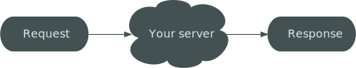

Platform.sh
Drupal 8
The Crash Course
Presented by Larry Garfield (@Crell)
@Crell

- Director of Runtimes and Integrations, Platform.sh
- Drupal 8 Web Services Lead
- Drupal Representative, PHP-FIG
implements Huggable
Drupal 8 is so different,
how will I ever learn it?
—Drupal developers
I hear Drupal 8 is finally not weird,
does that mean I can learn it?
—Everyone else
The more things change,
the more they stay the same
The concepts are still Drupal
The achitecture is modernized
The APIs are more consistent
Just enough theory
PHP 4 architecture

HTTP Architecture
Symfony/HttpKernel architecture
interface HttpKernelInterface {
const MASTER_REQUEST = 1;
const SUB_REQUEST = 2;
/**
* Handles a Request to convert it to a Response.
*
* @param Request $request A Request instance
* @param integer $type The type of the request
* @param Boolean $catch Whether to catch exceptions or not
*
* @return Response A Response instance
*/
public function handle(Request $request, $type = self::MASTER_REQUEST, $catch = true);
}
HttpKernel pipeline

Controllers
The concept formerly known as page callbacks
and now represented by a ()
use Symfony\Component\HttpFoundation\Response;
class MyControllers {
public function hello() {
return new Response('<html><body>Hello World</body></html>');
}
}
use Symfony\Component\HttpFoundation\Response;
use Symfony\Component\HttpFoundation\JsonResponse;
class MyControllers {
public function hello() {
return new Response('<html><body>Hello World</body></html>');
}
public function helloJson() {
$data['Hello'] = 'World';
return new JsonResponse($data);
}
}
use Symfony\Component\HttpFoundation\StreamedResponse;
class MyControllers {
public function helloCsv() {
$lots_of_data = get_lots_of_data();
$response = new StreamedResponse();
$response->headers->set('Content-Type', 'text/csv');
$response->setCallback(function() use ($lots_of_data) {
foreach ($lots_of_data as $record) {
print implode(', ', $record) . PHP_EOL;
}
});
return $response;
}
}
use Symfony\Component\HttpFoundation\BinaryFileResponse;
class MyControllers {
public function privateFile() {
return new BinaryFileResponse('secret_plans.odt');
}
}
class MyControllers {
public function helloDrupal() {
return array(
'#theme' => 'a_drupal_render_array',
'#description' => 'Those still exist.',
);
}
}
/hello/world/{from}/{to}
use Symfony\Component\HttpFoundation\Request;
class HelloController {
public function helloDrupal($to, $from, Request $request) {
return array(
'#theme' => 'love_letter',
'#from' => $from,
'#to' => $to,
);
}
}
module.routing.yml
hello.world:
path: '/hello/world/{from}/{to}'
defaults:
_controller: '\Drupal\mymodule\Controller\HelloController::helloDrupal'
requirements:
_permission: 'access content'
from: \s+
to: \s+
Gah, enough theory, how do I do stuff?
Drupal in 2 steps:
- Build a tool
- Wire it up
Drupal in 2 (other) steps:
- Extend a base class/interface
- Tell Drupal about it
How do I...?
define a module
/modules/hugs/hugs.info.yml
name: Hugs
description: Examples of hugs
type: module
core: 8.x
How do I...?
make a page
/modules/hugs/src/Controller/HugsController.php
namespace Drupal\hugs\Controller;
use Drupal\Core\Controller\ControllerBase;
class HugsController extends ControllerBase {
public function hug($to, $from) {
$message = $this->t('%from sends hugs to %to', [
'%from' => $from,
'%to' => $to,
]);
return ['#markup' => $message];
}
}
/modules/hugs/hugs.routing.yml
hugs.hug:
path: /hug/{from}/{to}
defaults:
_controller: 'Drupal\hugs\Controller\HugsController::hug'
_title: 'Hug!'
requirements:
_permission: 'access content'

How do I...?
make content themeable
/modules/hugs/hugs.module
function hugs_theme() {
$theme['hug_page'] = [
'variables' => ['from' => NULL, 'to' => NULL],
'template' => 'hug_page',
];
return $theme;
}
/modules/hugs/template/hug_page.html.twig
<section>
{% trans %}
<strong>{{ from }}</strong> hugs <em>{{ to }}</em>
{% endtrans %}
</section>
/modules/hugs/src/Controller/HugsController
namespace Drupal\hugs\Controller;
use Drupal\Core\Controller\ControllerBase;
class HugsController extends ControllerBase {
public function hug($to, $from) {
return [
'#theme' => 'hug_page',
'#from' => $from,
'#to' => $to,
];
}
}
How do I...?
make a config form
/modules/hugs/config/install/hugs.settings.yml
default_count: 3
/modules/hugs/config/schema/hugs.settings.yml
hugs.settings:
type: mapping
label: 'Hug module settings'
mapping:
default_count:
type: integer
label: 'Default hug count'
/modules/hugs/src/Form/ConfigForm.php
namespace Drupal\hugs\Form;
use Drupal\Core\Form\ConfigFormBase;
use Drupal\Core\Form\FormStateInterface;
class ConfigForm extends ConfigFormBase {
public function getFormId() { return 'hug_config'; }
protected function getEditableConfigNames() {
return ['hugs.settings'];
}
public function buildForm(array $form, FormStateInterface $form_state) {
$config = $this->config('hugs.settings');
$form['default_count'] = [
'#type' => 'number',
'#title' => $this->t('Default hug count'),
'#default_value' => $config->get('default_count'),
];
return parent::buildForm($form, $form_state);
}
public function submitForm(array &$form, FormStateInterface $form_state) {
parent::submitForm($form, $form_state);
$config = $this->config('hug.settings');
$config->set('default_count', $form_state->getValue('default_count'));
$config->save();
}
}
/modules/hugs/hugs.routing.yml
hugs.config:
path: /admin/config/system/hugs
defaults:
_form: 'Drupal\hugs\Form\ConfigForm'
_title: 'Hug configuration'
requirements:
_permission: 'configure_hugs'
/modules/hugs/hugs.permissions.yml
configure_hugs:
title: 'Configure the hugs system'
description: 'Configure default hug count'
/modules/hugs/hugs.links.menu.yml
hugs.config:
title: 'Hugs configuration'
description: 'Configure the hugs system'
route_name: hugs.config
parent: system.admin_config_system


/modules/hugs/src/Controller/HugsController
namespace Drupal\hugs\Controller;
use Drupal\Core\Controller\ControllerBase;
class HugsController extends ControllerBase {
public function hug($to, $from, $count) {
if (!$count) {
$count = $this->config('hugs.settings')->get('default_count');
}
return [
'#theme' => 'hug_page',
'#from' => $from,
'#to' => $to,
'#count' => $count
];
}
}
/modules/hugs/hugs.routing.yml
hugs.hug:
path: /hug/{from}/{to}/{count}
defaults:
_controller: 'Drupal\hugs\Controller\HugsController::hug'
_title: 'Hug!'
count: 0
requirements:
_permission: 'access content'
count: \d+
/modules/hugs/hugs.module
function hugs_theme() {
$theme['hug_page'] = [
'variables' => ['from' => NULL, 'to' => NULL, 'count' => NULL],
'template' => 'hug_page',
];
return $theme;
}
/modules/hugs/template/hug_page.html.twig
<section>
{% trans %}
<strong>{{ from }}</strong> hugs <em>{{ to }}</em> {{ count }} time.
{% plural count %}
<strong>{{ from }}</strong> hugs <em>{{ to }}</em> {{ count }} times.
{% endtrans %}
</section>
How do I...?
make a block
Definitions
- Plugin: Swappable, user-defined piece of functionality
- Plugin Type: A category of inter-changeable plugins
- Discovery: Collecting/cataloging plugins
-- or --
- Plugin Type: Interface
- Plugin: Implementing class
- Discovery: "find all
instanceof"
Plugins abstract/automate common OO practices
Drupal 7 extensibility
- Info hooks
- Little else in common
- ctools plugins: PHP 4 yuck
- No actual commonality
Drupal 8 extensibility
- Want user-configurable logic choices? Plugin
- Define interface, define manager class, done
Learn once, apply everywhere
—Lee Rowlands (core developer)
Pluginified systems in Drupal 8
- Actions
- Blocks
- Text formats
- Fields
- Field Widgets
- Field Formatters
- Image effects
- Conditions
- Mail backends
- Archiver
- Image toolkits
- Aggregator (Fetcher, Parser, Processor)
- Editor extensions
- EntityReference selections
- Migration
- REST Resources
- Search backends
- Tours
- All of Views…
/modules/hugs/src/Plugin/Block/HugStatus.php
namespace Drupal\hugs\Plugin\Block;
use Drupal\block\BlockBase;
/**
* Reports on hugability status.
*
* @Block(
* id = "hugs_status",
* admin_label = @Translation("Hug status"),
* category = @Translation("System")
* )
*/
class HugStatus extends BlockBase {
public function build() {
return [
'#markup' => $this->t('This is a hug-enabled site'),
];
}
}
/modules/hugs/src/Plugin/Block/HugStatus.php
class HugStatus extends BlockBase {
public function defaultConfiguration() {
return ['enabled' => 1];
}
public function blockForm($form, FormStateInterface $form_state) {
$form['enabled'] = [
'#type' => 'checkbox',
'#title' => $this->t('Hugging enabled'),
'#default_value' => $this->configuration['enabled'],
];
return $form;
}
public function blockSubmit($form, FormStateInterface $form_state) {
$this->configuration['enabled'] = (bool)$form_state->getValue('enabled');
}
public function build() {
$message = $this->configuration['enabled']
? $this->t('Now accepting hugs')
: $this->t('No hugs :-(');
return ['#markup' => $message];
}
}
How do I...?
Make a service
Services
- "Object that does something"
- Stateless
- Usually only one of
/modules/hugs/src/HugTracker.php
namespace Drupal\hugs;
use Drupal\Core\State\StateInterface;
class HugTracker {
protected $state;
public function __construct(StateInterface $state) {
$this->state = $state;
}
public function addHug($target_name) {
$this->state->set('hugs.last_recipient', $target_name);
return $this;
}
public function getLastRecipient() {
return $this->state->get('hugs.last_recipient');
}
}
/modules/hugs/hugs.services.yml
services:
hugs.hug_tracker:
class: Drupal\hugs\HugTracker
arguments: ['@state']
/modules/hugs/src/Controller/HugsController.php
namespace Drupal\hugs\Controller;
use Drupal\Core\Controller\ControllerBase;
use Drupal\hugs\HugTracker;
use Symfony\Component\DependencyInjection\ContainerInterface;
class HugsController extends ControllerBase {
protected $hugTracker;
public function __construct(HugTracker $tracker) {
$this->hugTracker = $tracker;
}
public static function create(ContainerInterface $container) {
return new static($container->get('hugs.hug_tracker'));
}
public function hug($to, $from, $count) {
$this->hugTracker->addHug($to);
$count = $count ?: $this->config('hugs.settings')->get('default_count');
return [
'#theme' => 'hug_page',
'#from' => $from,
'#to' => $to,
'#count' => $count,
];
}
}
/modules/hugs/src/Plugin/Block/HugStatus.php
namespace Drupal\hugs\Plugin\Block;
class HugStatus extends BlockBase implements ContainerFactoryPluginInterface {
protected $hugTracker;
public function __construct(array $configuration, $plugin_id, $plugin_definition,
HugTracker $hugTracker) {
parent::__construct($configuration, $plugin_id, $plugin_definition);
$this->hugTracker = $hugTracker;
}
public static function create(ContainerInterface $container,
array $configuration, $plugin_id, $plugin_definition) {
return new static(
$configuration, $plugin_id, $plugin_definition,
$container->get('hugs.hug_tracker')
);
}
public function build() {
$message = $this->t('No hugs :-(');
if ($this->configuration['enabled']) {
$message = $this->t('@to was the last person hugged', [
'@to' => $this->hugTracker->getLastRecipient()
]);
}
return ['#markup' => $message];
}
// ...
}
How do I...?
Work with content
Entities
- Storable ID'd content
- Content entities: "Fieldable"
- Configuration entities: Useful shortcut
The API is fully baked now!
Content entities
- Nodes
- Users
- Taxonomy terms
- Files
- Comments
- ...
/modules/hugs/hugs.routing.yml
hugs.node:
path: /node/{node}/hug
defaults:
_controller: 'Drupal\hugs\Controller\HugsController::nodeHug'
requirements:
_permission: 'access content'
/modules/hugs/src/Controller/HugsController.php
class HugsController extends ControllerBase {
public function nodeHug(NodeInterface $node) {
if ($node->isPublished()) {
// These are the same!
$body = $node->body->value;
$body = $node->body[0]->value;
// But we really want...
$formatted = $node->body->processed;
foreach ($node->field_tags as $tag) {
$terms[] = $tag->entity->label();
}
$message = $this->t('Everyone hug @name because @reasons!', [
'@name' => $node->getOwner()->label(), '@reasons' => implode(', ', $terms),
]);
return [
'#title' => $node->label() . ' (' . $node->bundle() . ')',
'#markup' => $message . $formatted,
];
}
return ['#markup' => $this->t('Not published')];
}
}
That should probably all be in a template...
Drupal in 2 steps:
- Build a tool
- Wire it up
The wiring may vary, the approach is the same
Guidelines
- Small classes, smaller methods
- Thin controllers
- Logic in services
- Not a DB query in sight...
- If it's hard to unit test, you're probably doing it wrong
Larry Garfield
Director of Runtimes and Integrations Platform.sh
Continuous Deployment Cloud Hosting
Stalk us at @PlatformSH
Thanks to Palantir.net for helping develop these slides